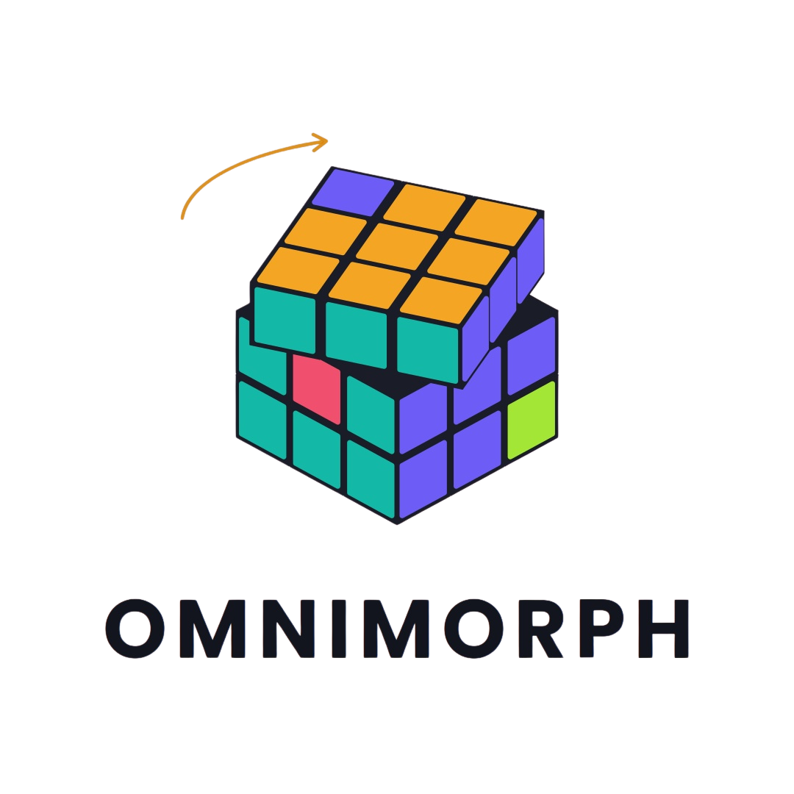

Visión
Detección de jugadores y balón frame a frame. Tracking con costura de identidad y mapeo a coordenadas reales de cancha (120 × 70 m).
Ve lo que el ojo no ve: posiciones, métricas tácticas y una crónica narrada por IA, todo en un solo tablero.

Detección de jugadores y balón frame a frame. Tracking con costura de identidad y mapeo a coordenadas reales de cancha (120 × 70 m).
Block height, velocidad de transición, compacidad y centroides. Suavizado Savitzky-Golay. Ventanas tácticas de 4 segundos.
Crónica táctica generada por ibm/granite-4-h-small vía watsonx.ai. Texto sintetizado a voz y sincronizado con el video.